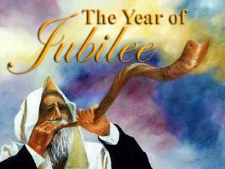
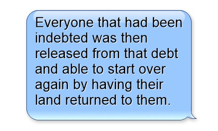

출애급기 23장 - 가짜 뉴스를 퍼뜨리지 말라
게시: 2019-07-11T06:30:04+09:00
최근 제가 다니기 시작한 교회에서는 (다른 교회도 다 마찬가지겠습니다만) 맥추절을 기념하는 설교가 있었습니다. 맥추절은 40년 동안 광야에서 하나님이 (안식일만 빼고) 매일 뿌려주시던 만나와 메추리를 먹고 살던 유대인들이 드디어 가나안에 정착하여 뿌린 첫 곡식을 거둔 것을 기념하는 날입니다. 성경에서는 그 다음날부터 만나가 하늘에서 내리지 않기 시작했다고 하니 무상급식이 중단된 슬픈 날이기도 하네요. 그날 목사님의 설교 주제는 더 이상 농경사회도 아닌 현대인들이 여전히 맥추절을 지켜야 하느냐에 관한 것이었습니다. 그 이유는 그냥 짧게 요약하면 '하나님께서 직접 지키라고 하셨기 때문' 이었지요. 저는 이 목사님의 설교는 매우 좋아하는 편입니다만, 그 부분은 개인적으로 그렇게 마음에 들지는 않았어요. 저 개인적인 생각입니다만, 솔직히 현대 한국 개신교에서 굳이 수천년 전 유대인들의 절기인 맥추절을 지켜야 할 이유는 전혀 없다고 보거든요. 하나님께서 지키라고 말씀하신 내용을 다 지키자면 돼지고기도 먹어서는 안 되고 선지국도 먹어서는 안 되며, 토지의 소유권은 영구적으로 매매되어서는 안 되고 그냥 최대 50년 동안의 사용권만 인정되어야 합니다. 이 모든 내용이 하나님께서 직접 지키라고 명하신 내용입니다. 레위기 25장 23절 토지를 영구히 팔지 말 것은 토지는 다 내 것임이니라 너희는 거류민이요 동거하는 자로서 나와 함께 있느니라 28절 그러나 자기가 무를 힘이 없으면 그 판 것이 희년에 이르기까지 산 자의 손에 있다가 희년에 이르러 돌아올지니 그것이 곧 그의 기업으로 돌아갈 것이니라
 
(우리 사회의 부동산 부자들이 들으면 "빨갱이들이냐 !" 라며 벌컥 화를 낼 이야기입니다만, 엄연히 하나님께서 직접 명하신 내용입니다. 악성 부채탕감과 토지공개념은 알고 보면 성경에 적혀있는 사상인 셈이지요.)
그러나 제가 이 목사님 설교는 무척 좋아하는 이유는, 이 목사님께서는 설교 준비를 참 많이 하시는지 매번 설교를 들을 때마다 새롭게 배우는 것이 많기 때문입니다. 가령 이번에도 맥추절 관련 구절인 출애급기 23장을 언급하셨는데, 덕분에 저도 간만에 출애급기 23장을 한번 정독하게 되었습니다. 정말 좋은 내용이 많더군요. 1절 너희는 헛된 소문을 퍼뜨리지 말며 허위 증언을 하여 악한 사람을 돕지 말아라. 5절 또 너희를 미워하는 사람이 짐을 실은 채 쓰러져 있는 나귀를 일으키려고 애쓰는 것을 보거든 그냥 지나가지 말고 그를 도와주어라. 8절 너희는 뇌물을 받지 말아라. 뇌물은 사람의 눈을 멀게 하고 의로운 사람의 진술을 묵살시킨다. 9절 너희는 외국인을 학대하지 말아라. 너희도 이집트에서 외국인이었으므로 너희는 외국인의 심정이 어떠한지 알고 있다. 11절 7년째 되는 해에는 땅을 갈지 말고 묵혀 두어라. 거기서 저절로 자라는 것은 가난한 사람들이 먹게 하고 남은 것은 들짐승이 먹게 하라. 그리고 너희 포도원과 감람원에도 그렇게 하라. 현대적인 도덕 관념이나 사회 정의 차원에서 보더라도 바람직할 뿐만 아니라 정말 꼭 지켜야 하는 내용들입니다. 그런데, 제가 교회를 건성건성 다녀서 그런지 몰라도 지난 20년 넘게 교회 생활을 하면서, 제가 이 출애급기 23장 중에서 교회 설교를 통해 들은 내용은 아래의 딱 하나 뿐이었습니다. 저 위의 정말 훌륭한 계율들에 대해서 말씀하시는 목사님은 (저 개인적으로는) 한번도 뵌 적이 없습니다. 15 내가 너희에게 명령한 대로 너희가 이집트에서 나온 1월의 정한 때에 무교절을 지켜라. 너희는 7일 동안의 이 명절 기간에 누룩 넣지 않은 빵을 먹어야 하며 나에게 경배하러 올 때에는 빈손으로 오는 자가 없어야 한다. 이번 목사님은 그러지 않으셨지만, 예전 목사님들 중에는 특히 저 마지막 구절, '아무도 빈손으로 내 앞에 경배하러 오지 말라'라는 부분을 강조하시는 분들이 많았습니다. 그러면서 항상 맥추절 감사헌금 봉투는 따로 만들어서 주보 속에 끼워두셨지요. 일부 개신교 성직자분들은 북한 공산당에게서 박해받은 개신교의 역사 때문인지 상당히 강경한 보수 우파를 자처하는 경우가 많습니다. 하지만 그 분들도 분명히 하나님의 말씀을 따르는 성도들일텐데, 하나님께서 엄격히 금지하신 가짜 뉴스 유포에 적극적으로 열을 올리시는 것은 무척 이해하기 어렵습니다. 아무리 원수지간이라고 할지라도, 어려움에 처한 원수를 못 본 척 하지 말고 적극적으로 도와주라는 말씀도 그렇고, 무엇보다 가난한 사람들을 위해 주기적으로 베풀며 살라는 말씀의 취지를 이해한다면, 사실 기독교인이라면 복지 확대와 평화 정착에 찬성할 수 밖에 없다고 저는 생각합니다. 제가 받은 느낌은 이런 것이었어요. 성경에 뭐라고 씌여 있건 간에, 결국 사람은 자기가 믿고 싶은 것만 믿습니다. 그건 저 역시 마찬가지입니다. 성경에 분명히 동성애자들은 쳐죽이라고 나오지만 그건 선지국 먹은 사람들은 자손까지 쓸어버리겠다는 말씀과 동격이므로 현대에는 지키지 않아도 된다라고 저는 생각하거든요. 동성애자도 그들 스스로 선택한 것이 아니라 분명히 하나님께서 그렇게 만든 사람들인데, 동성애자라는 이유 하나만으로 핍박하는 것은 맞지 않다고 생각하기 때문입니다. 성경은 하나님의 말씀이므로 한글자 한글자 그대로 지켜야 한다고 생각하시는 분들도 꽤 많습니다. 그러나 그런 분들조차 정말 한글자 한글자 그대로 지키는 분들은 본 적이 없고, 그 분들도 그냥 자기가 지키고 싶은 것들만 골라서 지키는 것 같습니다. 가령 위에서 인용한 출애급기 23장 15절에는 분명히 무교절 1주일 간에는 누룩 넣지 않은 빵 즉 무교병을 먹어야 하는데, 아마 그 분들조차도 1주일 동안 그런 무교병을 먹으며 지내지는 않으실 거에요. 사람이 종교를 갖게 되는 이유는 무엇보다 인간은 결국 죽음을 피할 수 없을 뿐만 아니라, 무엇이 옳고 무엇이 그른지 분간조차 하기 힘든 미약하고 어리석은 존재이기 때문입니다. 그런데 가만 보면 (저 또한 같은 비난을 받을 수 밖에 없는 처지입니다만) 그렇게 자신의 미약함과 어리석음을 인정하는 대신 자신의 에고가 너무 강해서 결국 자신의 뜻을 신의 뜻이라고 포장해서 다른 사람들에게 강요하는 경우가 너무나 많습니다. 특히 종교는 선거에 의해 권력이 창출되는 현대 민주주의에서는 상당히 강한 영향력을 가지기 때문에 더욱 그런 것 같습니다. 결과적으로 성직자들의 말을 맹신하지 말고, 각자 알아서 성서를 읽고 공부하며 하나님의 뜻이 무엇인지 자신이 어떻게 행동해야 하는지 생각해보는 수 밖에 없는 것처럼 보입니다. 하지만 그것도 쉽지 않은 것이, 원래 신학이라는 것이 여러가지 언어에 통달해야 하는 등 상당히 고차원적인 학문이라서, 성경 한권 붙잡고 자기 혼자 해석을 하다가는 이단이라는 소리 듣기 딱 좋습니다. 실제로 지식이 부족해서 엉뚱한 결론을 나름대로 내기도 쉽고요. 자신의 생각에 저 분의 말씀이 옳다라고 생각되는 성직자 분이 있다면 그런 존경할 만한 분의 말씀을 참고하는 것이 가장 좋겠지요. 제가 '성직자의 해석에 전적으로 의존할 필요도, 그 말씀에 복종할 필요도 없다' 라고 하면 아마 화를 내실 목사님들이 있을지 모르겠습니다. 그러나 목사님들도 한낱 인간에 불과하며, 인간은 흠이 많을 수 밖에 없는 미천한 존재입니다. 무엇보다, 개신교 자체가 바로 똑같은 이유로 바티칸 교황청이 성서의 해석을 독점하는 권위에 반발하여 생겨난 종단이라는 사실은 기억해야 한다고 봅니다.